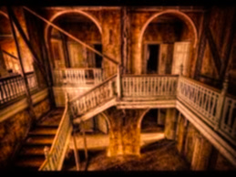
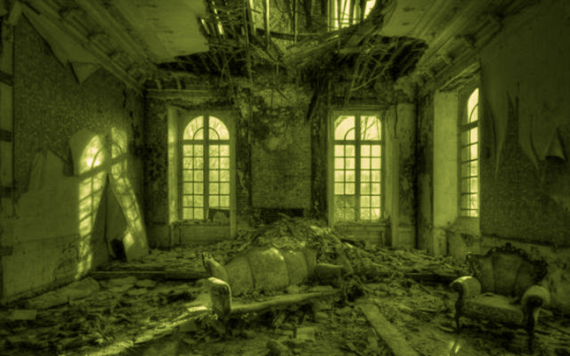
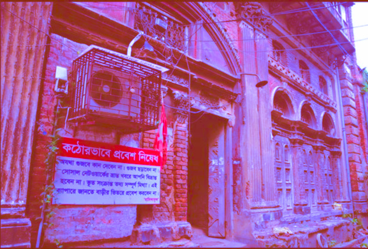

Putulbari (read House of dolls) is a century old house, almost in its ruins. The architecture depicts dolls in the arches, hence the name. The house was once inhabited by rich landlords of Bengal, who tortured and exploited women to a great extent.

Putulbari or the “House of Dolls” is situated near the Sovabazar jetty, not far from the haunted Nimtala Ghat. Now, the very thought of dolls in old houses with cobwebs and noises build an eerie feeling within us, isn’t it? There are some inhabitants in the house till now, but no one dares to visit the upper stories of this haunted house. If you are seeking for some paranormal adventure in Kolkata, you may surely try visiting Putulbari. The huge architecture of Roman style along with some dolls on stands just multiplies the spookiness of the place and will immediately give you jitters when you see it. The Babus (wealthy owners) who inhabited the place in the old days used to sexually exploit young women here and even killed some of them. Now it is said that the spirits of the women are still haunting the place in order to seek justice. Deep in the night, one may sense a shrill laughter or even clinking of bangles and anklets! Isn’t this just too scary to hear?

The name itself does half the job of spooking people out! This century-old building built after British architecture gets its name from the dolls on the arches, which used to be the residence of rich landlords. The history behind this building and the reported screams of cry by female voices here stems from the fact that women were tortured here. Even though there are people who have made the ground floor of the building their home, even they advise against going up the stairs. It’s a spook-fest, to say the least.
Another Story
 With a name like that, there is little doubt about the spooky quotient of this one. An old, dilapidated building with just a few residents on the lower floors and a terrace that is adorned with dolls made in archaic Roman style, it has a good number of horror stories about it. Nobody is allowed to visit the upper floors of the building even during daytime since the place is supposedly haunted by spirits of courtesans, who were abused by wealthy landlords during and before the British rule in India. People confess to hearing both women's wails and hysterical laughter from the upper floor of Putulbari at night. While the story might or might not be true, the very sight of the building is enough to send chills down the spine.
THE END
Thanks,
Feel The Fear